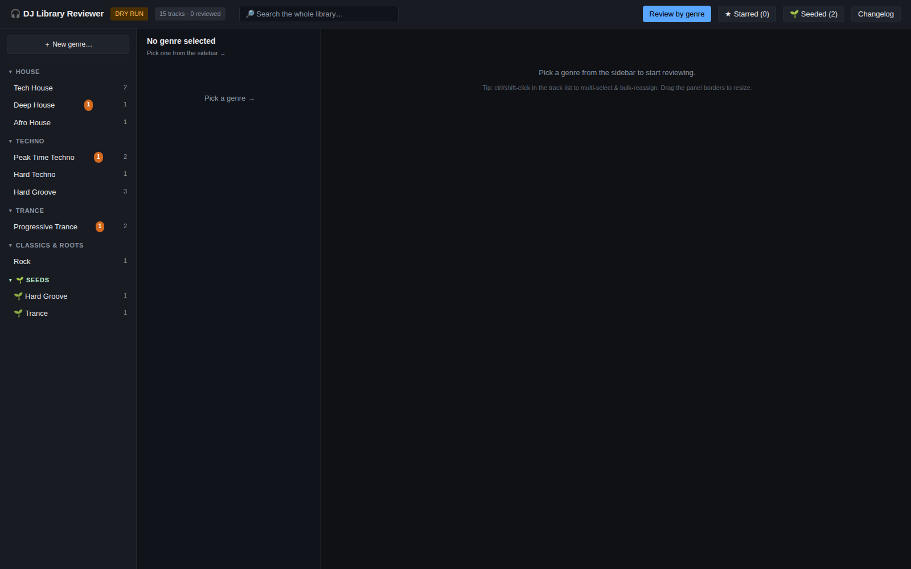
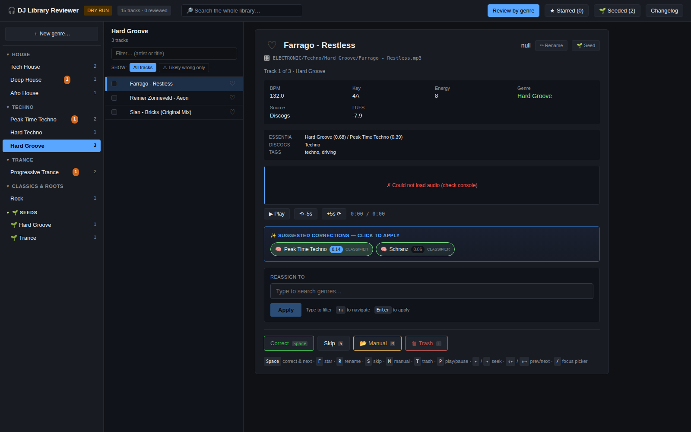
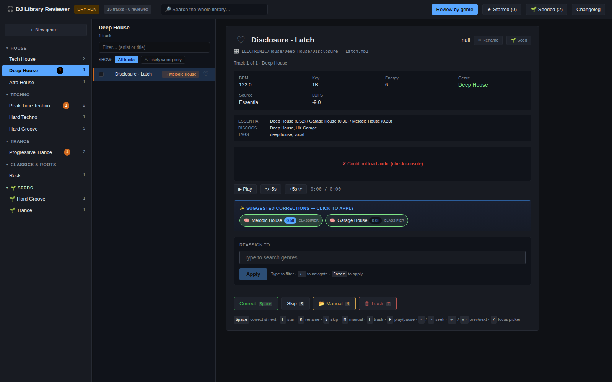
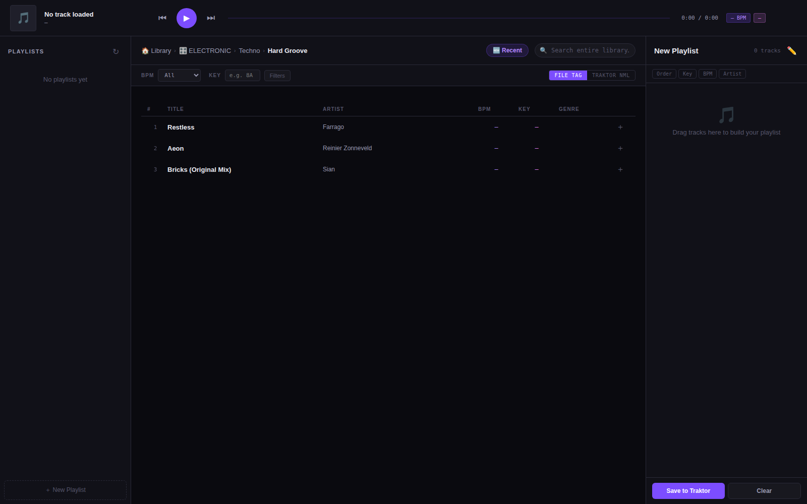

April 2026 - Present · 6 months and counting
Personal Project · Own DJ library (Denon SC5000 Prime x2 + X1800 Prime, Traktor Pro 3)
Individual Project
I built a full genre-classification and curation system for my own DJ library: a raw dump of ~12,500 audio files with no consistent tagging, sitting on a USB drive, unusable for actual mixing. Over six months this grew from a one-off cleanup script into a proper active-learning pipeline — metadata APIs and audio embeddings feed a classifier, a purpose-built review app lets me correct it track by track, and every correction retrains the model so it gets better at the genres I actually care about.
It's not a client project or a coursework challenge — it's the kind of system I'd want to build for a production ML team: multi-stage signal fusion, a human-in-the-loop feedback cycle, cross-platform infrastructure constraints solved with real architecture (not workarounds), and a classifier that's honest about where it's confident and where it isn't.
A DJ library isn't useful if you can't find the right track at the right moment. Mine had grown into a raw ~12,500-file dump — duplicates, junk files, inconsistent naming, no reliable genre tags — spread across an external Kingston drive. Loading that straight into Traktor would have meant scrolling through chaos mid-set.
The system is four tools chained together, split across two physical machines because of the ARM64/x86_64 constraint above. Essentia's audio embeddings can only be extracted on the x86 Linux Mint machine; everything else — orchestration, the review app, the classifier training — runs wherever's convenient, usually a DGX Spark (ARM64, NVIDIA GB10).
┌───────────────────────────┐ ┌──────────────────────────┐
│ PHASE 1 │ │ PHASE 2 │
│ Library Prep │ ---> │ Auto-Classification │
│ (dedupe, clean, rename) │ │ (metadata + Essentia + │
│ 12,500 → ~7,200 tracks │ │ LLM cascade, v1 → v6) │
└───────────────────────────┘ └──────────────────────────┘
│
v
┌─────────────────────────┐ ┌──────────────────────────┐
│ PHASE 4 │ <--- │ PHASE 3 │
│ Active-Learning │ │ Review App (Flask) │
│ Classifier (v2) │ │ human corrections → │
│ Essentia embeddings │ │ 🌱 SEEDS/ ground truth │
│ + Logistic Regression │ │ │
│ 76.7% CV accuracy │ └──────────────────────────┘
└─────────────────────────┘ │
│ v
└──────────────> predictions.csv <───────┘
feeds back into the Review App
as "⚠ Likely wrong" prioritization
┌─────────────────────────────────────────────────────────────┐
│ PHASE 5 — Playlist Builder │
│ Reads Traktor's collection.nml directly: BPM, key, genre, │
│ recent additions, full-library search, harmonic prep │
└─────────────────────────────────────────────────────────────┘
The loop between Phase 3 and Phase 4 is the core idea: the classifier isn't a one-shot model, it's a system that gets retrained every time I correct it. More manual reviewing → more seed labels → a better classifier → better suggestions → faster reviewing.
Before any classification could happen, the raw dump needed to become a clean, deduplicated set of files with sane names. This ran as a chain of small, single-purpose Python scripts — each one auditable and re-runnable on its own.
This is where most of the iteration happened. The goal: assign each track to one of ~50 sub-genres under a broad taxonomy (House, Techno, Trance, Breaks & Bass, Electronic & Leftfield, Classics & Roots, Mainstream & Pop) using whatever signal was available — metadata first, audio analysis as a fallback, an LLM as the last resort.
Getting the LLM stage right took several failed attempts. Nemotron-3-super:120b was the first choice as final classifier — it's a reasoning model, and with a 50-token output cap it never got past "We need to classify..." before running out of tokens. Every single one of 6,277 test tracks fell through to "To Sort Manually." Switching to Qwen2.5:7b (and later Qwen3:14b with an explicit /no_think prefix to suppress its own reasoning) fixed that immediately.
The single biggest accuracy win, though, was removing "To Sort Manually" as a valid answer entirely. Once the model couldn't cop out, the unsorted bucket went from ~66% → ~3% → 0%.
The automated pipeline gets most tracks right, but "most" isn't good enough for a genre-sorted library you actually perform from. So I built a local Flask app to triage the library track by track — a purpose-built tool, not a spreadsheet.
🌱 SEEDS/<genre>/ folder and rewrites its tag to match — turning a one-off correction into a permanent, trustworthy training label.
Every move — dry-run or real — is atomic and logged to changelog.jsonl (6,813 entries and counting): tag rewrite, file move, and a rollback path if the move half-fails. Nothing is silently lost.

The reviewer's sidebar — genres grouped by broad family, orange badges marking tracks the classifier disagrees with, and a live 🌱 SEEDS count feeding the next training run

Reviewing a Hard Groove track — BPM/key/energy at a glance, raw Essentia and Discogs signals underneath, and one-click classifier suggestions ranked by confidence

The active-learning loop in action: this track sits in Deep House, but the classifier flags it "⚠ Melodic House" at 58% confidence — exactly the kind of blurry-genre disagreement the review workflow is built to surface
Try the actual trained classifier — upload a track, get a genre prediction with honest, calibrated confidence
⭐ Try Live DemoOnce enough seeds existed, I trained a proper classifier on top of them — this is the piece I'd point to as the most "ML engineering" part of the project. It's deliberately simple: not because a bigger model wasn't available, but because a well-calibrated linear model on strong embeddings beat the complexity budget for the problem.
# Feature extraction — Essentia Discogs-EffNet, 1280-dim embeddings
# (runs on the x86_64 Mint machine; Essentia won't build on ARM64)
audio = es.MonoLoader(filename=track, sampleRate=16000, resampleQuality=4)()
emb_model = es.TensorflowPredictEffnetDiscogs(
graphFilename="discogs-effnet-bs64-1.pb", output="PartitionedCall:1"
)
embedding = emb_model(audio) # -> (n_frames, 1280), averaged per track
# Classifier — logistic regression + sigmoid calibration
pipeline = Pipeline([
("scaler", StandardScaler()),
("lr", LogisticRegression(
C=1.0, class_weight="balanced", max_iter=2000, solver="lbfgs",
)),
])
# Stratified 5-fold CV for an honest per-class accuracy read
skf = StratifiedKFold(n_splits=5, shuffle=True, random_state=42)
# ... fit/predict per fold, pool results for classification_report ...
# Final model: calibrated so confidence scores are trustworthy,
# not the over-confident 0.99s a raw LR gives on a memorizable set
calibrated = CalibratedClassifierCV(pipeline, method="sigmoid", cv=3)
calibrated.fit(X, y)
# In-sample accuracy: 96.3% | 5-fold CV accuracy: 76.7%
# (the ~20pt gap is the tell that in-sample alone would be misleading —
# CV is the number that matters)
Design choices that mattered: class_weight="balanced" so genres like Trance (471 labels) don't drown out Reggaeton (11 labels); a hard floor of 8 labels per class below which a genre gets dropped from training entirely rather than let the model hallucinate on it; and sigmoid calibration so a 0.4 confidence score actually means "40% of the time this is right," not "the model is being falsely modest."
Trained on 2,588 seed-verified labels across 37 genres that cleared the minimum-label threshold.
The pattern is consistent with the genres themselves: Hard Groove, Hard Techno, and Schranz are sonically distinct and have enough labeled examples. Deep House, Progressive House, and Melodic House sit on a genuinely blurry continuum — a human reviewer disagrees with themself on some of these tracks, so 76.7% overall accuracy with those specific classes underperforming isn't a modeling failure, it's an honest reflection of genre ambiguity. That's exactly the signal the Phase 3 review app uses to prioritize what to check first.
The last piece talks directly to Traktor. It parses collection.nml (Traktor's own library file) to pull BPM, musical key, and genre per track, then layers a browsing UI on top: recently-added tracks, full-library search, and album art — all without touching Traktor itself.

Browsing straight into Electronic → Techno → Hard Groove — drag tracks into the panel on the right to build a set, then push it to Traktor as a native playlist
Challenge 1: Essentia won't build on ARM64.
The DGX Spark (ARM64) is my main orchestration machine, but Essentia hardcodes an -msse x86 build flag. Solution: moved all embedding extraction to a separate Linux Mint x86_64 box and shipped a pre-computed embeddings.npz back — a real distributed-architecture decision, not a hack.
Challenge 2: Reasoning models can't follow "answer with one word."
Nemotron-3-super:120b burned its entire token budget reasoning out loud and never reached an answer, sending 100% of tracks to the unsorted bucket. Solution: switched to Qwen models, which needed an explicit /no_think directive of their own to suppress the same behavior.
Challenge 3: Passive-label poisoning.
An early version trained the classifier on tracks that had simply stayed in their pipeline-assigned folder, treating that as a positive label. That taught the model to reproduce its own mistakes. Solution: the seeds-only training set — only tracks a human explicitly moved count as ground truth.
Challenge 4: Overconfident predictions.
Raw logistic regression on 1280-dim embeddings memorized training data and output near-1.0 confidence on everything, useless for triage. Solution: CalibratedClassifierCV with sigmoid calibration, bringing mean confidence down to a realistic ~0.41-0.47 — low enough to be honest, still useful for sorting "check this first."
Challenge 5: Traktor's beatgrid vs. external tools.
Batch-analyzing tracks in Traktor occasionally set the wrong beatgrid phase, and running Traktor in standalone/Engine DJ mode on the SC5000 decks caused misalignment entirely. Solution: individual (not batch) analysis for problem tracks, Computer Mode via a custom MIDI TSI hardware mapping instead of standalone mode, and Mixed In Key handling key detection exclusively so it never fights Traktor's own BPM analysis.
"Training a model" is mostly infrastructure work. The actual classifier here is a few dozen lines of scikit-learn. Everything that made it work — embedding extraction across two machines, a labeling tool that produces trustworthy ground truth, a signal-priority chain that only falls back to the LLM when metadata fails — is systems engineering, and that's where most of the six months went.
Removing an escape hatch beats improving confidence. Deleting "To Sort Manually" as a valid LLM answer did more for the automated pipeline's accuracy than any prompt tweak. Forcing commitment surfaced better signal than hedging did.
Passive labels are a trap. Using a model's own outputs as training data — even when they look reasonable — teaches it to be confidently wrong in the same way, every time. Ground truth has to come from an independent source, in this case a human explicitly moving a file.
Calibration matters more than most people give it credit for. A model that's 76.7% accurate but knows when it's guessing is more useful in a real workflow than one that's 85% accurate but always "sure." The whole review-prioritization feature depends on the confidence numbers being honest.
Cross-platform constraints can be architectural decisions, not annoyances. Essentia's ARM64 limitation could have been a dead end. Instead it forced a genuinely better design: a clean, resumable interface (a single .npz file) between two machines with different jobs.